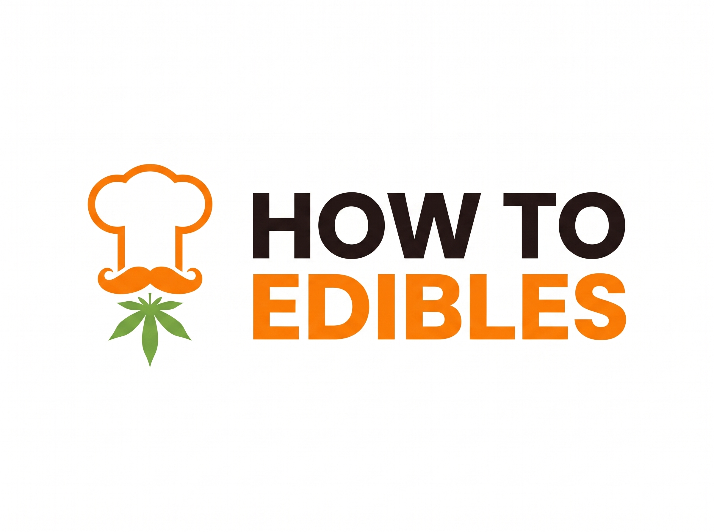

<!doctype html>
<!-- PROTOTYPE — throwaway. Question: does the owner's new logo model (logonovo.jpeg) work as the site logo, and in which form?
     A · faithful (heavy grotesque, the model's orange/green) · B · adapted (Unbounded 800 + the site's orange).
     Branch prototype/logo-v2 only. `python3 -I scripts/qa/serve.py 8793` from the repo root, then /_prototype-logo2/
     Params: v=A|B  theme=light|dark  shot=1 -->
<html lang="en" data-theme="light">
<head>
<meta charset="utf-8">
<meta name="viewport" content="width=device-width, initial-scale=1">
<meta name="robots" content="noindex">
<title>PROTOTYPE · logo v2</title>
<link rel="stylesheet" href="https://fonts.googleapis.com/css2?family=Archivo+Black&display=block">
<style>
@font-face{font-family:Unbounded;src:url(/fonts/unbounded-800.latin1.woff2) format("woff2");font-weight:800;font-display:block}
:root{--paper:#fff;--ink:#1f1410;--ink-2:#6a5a50;--orange:#f27242;--line:#ecdfd6;--chip:#f6eee9;color-scheme:light}
[data-theme=dark]{--paper:#191210;--ink:#f7ede6;--ink-2:#bba89b;--line:#3a2c26;--chip:#2a1f1b;color-scheme:dark}
*,*::before,*::after{box-sizing:border-box}
body{margin:0;background:var(--paper);color:var(--ink);font:16px/1.5 -apple-system,BlinkMacSystemFont,"Segoe UI",Roboto,sans-serif;padding:0 20px 120px}
h2{font:800 22px/1.2 Unbounded,sans-serif;margin:44px 0 6px;letter-spacing:-.02em}
p.n{margin:0 0 14px;color:var(--ink-2);font-size:14px;max-width:70ch}
/* colour roles: every context remaps these four */
.lg{--lk:var(--ink);--lo:var(--orange);--lg:#5f9e3a;--lp:var(--paper);display:block;height:auto}
.lg .k{fill:var(--lk)} .lg .o{fill:var(--lo)} .lg .g{fill:var(--lg)} .lg .p{fill:var(--lp)}
.model{--lo:#f5821f;--lg:#79ab47}           /* A: the model's own colours */
[data-theme=dark] .lg,.fixed{--lp:#fff}     /* a chef's hat is white, also on the dark page (same rule as C2) */
.fixed{--lk:#1f1410}
.oncol{--lk:#1f1410;--lo:#1f1410;--lg:#1f1410;--lp:#fff} /* on a cover colour: one ink, the toque stays white */
.cmp{display:grid;grid-template-columns:repeat(auto-fit,minmax(300px,1fr));gap:18px;align-items:center}
.cmp figure{margin:0;padding:22px;border-radius:20px;background:var(--chip)}
.cmp figure.w{background:#fff}
.cmp img,.cmp svg{width:100%;height:auto;display:block}
figcaption{font:600 12px ui-monospace,Menlo,monospace;color:var(--ink-2);margin-top:10px}
.frames{display:flex;gap:18px;flex-wrap:wrap;align-items:flex-start}
.frames figure{margin:0}
.frames iframe{border:2px solid var(--line);border-radius:14px;background:#fff;display:block}
.og{width:min(600px,100%);aspect-ratio:1200/630;position:relative;overflow:hidden;border-radius:12px;display:block}
.og .lg{position:absolute;left:5.3%;top:8.9%;width:26%}
.og b{position:absolute;left:5.3%;bottom:9%;font:800 clamp(18px,5.2vw,38px)/1.04 Unbounded,sans-serif;color:#1f1410;letter-spacing:-.03em;max-width:60%}
.icons{display:flex;gap:26px;align-items:flex-end;flex-wrap:wrap}
.icons figure{margin:0;text-align:center}
.icons svg{display:block;margin:0 auto}
#bar{position:fixed;left:8px;bottom:8px;z-index:9;background:#222;color:#eee;font:12px ui-monospace,Menlo,monospace;padding:8px 10px;border-radius:8px;display:flex;gap:12px}
#bar a{color:#9cf}#bar a[aria-current]{color:#fff;font-weight:700;text-decoration:none}
body.shot #bar{display:none}
</style>
</head>
<body>
<div id="app"></div>
<div id="bar"></div>
<script src="logo.js"></script>
<script>
const Q = new URLSearchParams(location.search), v = Q.get("v") === "B" ? "B" : "A", theme = Q.get("theme") === "dark" ? "dark" : "light";
document.documentElement.dataset.theme = theme;
if (Q.has("shot")) document.body.classList.add("shot");
const link = (k, val, label) => `<a href="?${new URLSearchParams({ v, theme, [k]: val })}"${({ v, theme })[k] === val ? " aria-current" : ""}>${label}</a>`;
document.getElementById("bar").innerHTML = `${link("v", "A", "A · fiel")} ${link("v", "B", "B · adaptado")} | ${link("theme", "light", "claro")} ${link("theme", "dark", "escuro")}`;
const col = v === "A" ? " model" : "";
const ICON = (cls, tile) => `<svg class="lg${cls}" viewBox="-14 -6 128 176" width="__" height="__">${tile}${symbol(9)}</svg>`;

document.getElementById("app").innerHTML = `
<h2>${v === "A" ? "A · fiel ao modelo" : "B · adaptado ao site"}</h2>
<p class="n">${v === "A" ? "Fonte grotesca pesada (Archivo Black) e o laranja/verde do modelo." : "Texto em Unbounded 800 (a fonte dos títulos do site) e o laranja do site (#f27242)."} Redesenhado em vetor: muda de cor no modo escuro e fica nítido em qualquer tamanho.</p>
<div class="cmp">
  <figure class="w"><figcaption>modelo (logonovo.jpeg)</figcaption></figure>
  <figure>${lockup(v, "main").replace('class="lg', `class="lg${col}`)}<figcaption>${v} · vetor</figcaption></figure>
</div>

<h2>No site de verdade</h2>
<p class="n">Páginas geradas do site com o logo trocado: cabeçalho, barra compacta (role um pouco para cima dentro do frame) e menu.</p>
<div class="frames" id="frames"></div>

<h2>Cartão de compartilhamento (og:image)</h2>
<p class="n">Sobre a cor da categoria o laranja e o verde sumiriam (laranja no laranja); ali o logo fica todo em tinta escura, com o chapéu branco.</p>
<div class="frames">
  <span class="og" style="background:#f27242">${lockup(v).replace('class="lg', 'class="lg oncol')}<b>Pot Brownies</b></span>
  <span class="og" style="background:#5cc48a">${lockup(v).replace('class="lg', 'class="lg oncol')}<b>Cannabis Vegan Brownies</b></span>
</div>

<h2>Favicon e ícone do app</h2>
<p class="n">Em 16–32 px o texto não cabe: fica só o chef. F1 traço mais grosso no branco · F2 sobre laranja, chef branco.</p>
<div class="icons" id="icons"></div>`;

// favicons: F1 = symbol on white, heavier outline; F2 = orange tile, white chef
const f1 = `<rect x="-14" y="-6" width="128" height="176" rx="0" fill="#fff"/>`;
const icon = (size, kind) => {
  const tile = kind === "F2" ? `<rect x="-14" y="-6" width="128" height="176" rx="30" fill="#f27242"/>` : `<rect x="-14" y="-6" width="128" height="176" rx="30" fill="#fff" stroke="#ecdfd6" stroke-width="2"/>`;
  const cls = kind === "F2" ? ` oncol" style="--lo:#fff;--lg:#fff;--lp:#f27242;--lk:#fff` : col + " fixed";
  return `<figure><svg class="lg${cls}" viewBox="-14 -6 128 176" width="${size * 128 / 176}" height="${size}">${tile}${symbol(kind === "F2" ? 7 : 9)}</svg><figcaption>${kind} ${size}px</figcaption></figure>`;
};
document.getElementById("icons").innerHTML = ["F1", "F2"].flatMap((k) => [16, 32, 64, 180].map((s) => icon(s, k))).join("");

// real pages: same-origin iframes, the #logo symbol swapped for the fitted lockup
const FR = [["/recipes/pot-brownies/", 344, 640], ["/de/", 390, 700], ["/calculator.html", 1280, 760]];
document.fonts.ready.then(async () => {
  await document.fonts.load("400 40px 'Archivo Black'"); await document.fonts.load("800 40px Unbounded");
  document.querySelectorAll("svg.lg").forEach((s) => s.querySelector("text") && fit(s));
  const fitted = document.getElementById("main");
  const sym = `<symbol id="logo" viewBox="0 0 432 164">${fitted.innerHTML}</symbol>`;
  const css = `<link rel="stylesheet" href="https://fonts.googleapis.com/css2?family=Archivo+Black&display=block"><style>.logo{aspect-ratio:432/164!important;--lk:var(--ink);--lo:${v === "A" ? "#f5821f" : "var(--orange)"};--lg:${v === "A" ? "#79ab47" : "#5f9e3a"};--lp:${theme === "dark" ? "#fff" : "var(--paper)"}}.logo .k{fill:var(--lk)}.logo .o{fill:var(--lo)}.logo .g{fill:var(--lg)}.logo .p{fill:var(--lp)}</style>`;
  const box = document.getElementById("frames");
  for (const [path, w, h] of FR) {
    const sc = Math.min(1, 600 / w);
    box.insertAdjacentHTML("beforeend", `<figure><div style="width:${w * sc}px;height:${h * sc}px;overflow:hidden"><iframe src="${path}" width="${w}" height="${h}" style="transform:scale(${sc});transform-origin:0 0"></iframe></div><figcaption>${path} · ${w}px</figcaption></figure>`);
    const fr = box.lastElementChild.querySelector("iframe");
    fr.addEventListener("load", () => {
      const d = fr.contentDocument;
      d.documentElement.dataset.theme = theme;
      d.head.insertAdjacentHTML("beforeend", css);
      d.getElementById("logo").outerHTML = sym;
      // show the compact bar too, as it looks while scrolling up
      if (Q.has("mini")) d.body.classList.add("mini-on");
    });
  }
});
</script>
</body>
</html>
